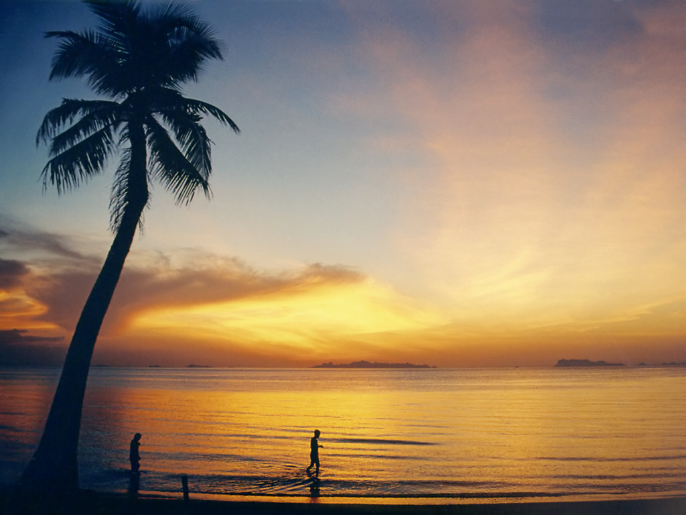

Koh Samui

Events and Festivals
- Buffalo Fighting Festival: One of the best-known festivals on Ko Samui is the Buffalo Fighting Festival which is held on special occasions such as New Year's Day and Songkran. Unlike Spanish bullfighting, the fighting on Ko Samui is fairly harmless. The fighting season varies according to some ancient customs and ceremonies. The buffalo are decorated with ribbons and gold-painted leaves. Before the contest, which lasts just two rounds, monks spray the buffalos with holy water. Gambling is often part of these events, though Gambling in Thailand is illegal.
- Samui Regatta: The Samui Regatta is a sailing tournament held every year. The tournament is internationally known and competitors come from as far away as Australia, Singapore, Japan, and China. The event began in 2002.
- Ten Stars Samui Art Party: A recurring cultural event bringing together art lovers, local Thai and international artists, and their artwork. The annual event, hosted at various resorts and other venues, focus on building the art community on Ko Samui, with presentations by featured artists.
- Samui Triathlon: The International Triathlon Union organizes this event every year. This event draws more than five hundred participants from around the world.
- Koh Samui THA Midnight Run: The Koh Samui Midnight Run is a charity run organized by the Thai Hotel Association (THA) and the Thai Association of Ko Samui (TAKS). It is a yearly event usually held in March. With up to 2,000 participants, the run is one of the biggest on Samui and in Thailand. Participants run 5 km or 10 km around the streets of Chaweng Beach. The first run was held in 2013.
- The Koh Samui (Anniversary) Festival is held every year around the second week of September, usually in the port city of Nathon as well as in Chaweng. It includes many events such as concerts, craft fairs, Thai cultural exhibitions and a huge, free buffet set up along the island's longest beach; so big in fact, that the festival's free dinner table offering earned a Guinness World Record for largest buffet ever served, on September 12. 2017. It stretched 2.5 kilometres along Chaweng Beach on Samui. The five-day festival occurs ever year but was initially founded to commemorate the 120th anniversary of the island’s founding in 1897.
- Koh Samui International Podcast Festival: The International Podcast Festival is held on Chaweng beach with the 2018 festival drawing a mainly international audience of several hundred people. Multiple podcasts featured, including Australian Logie award winner Dilruk Jayasinha hosting an episode of The Dollop.